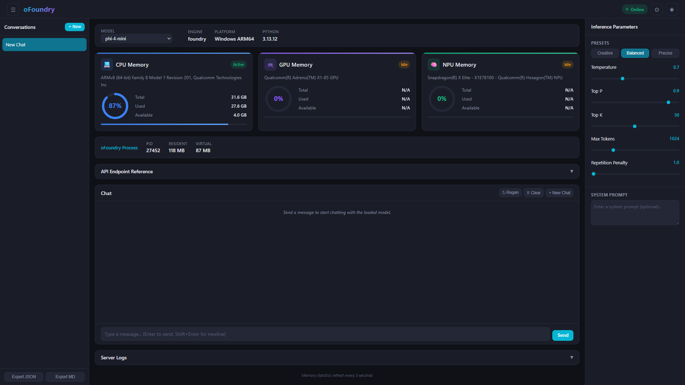
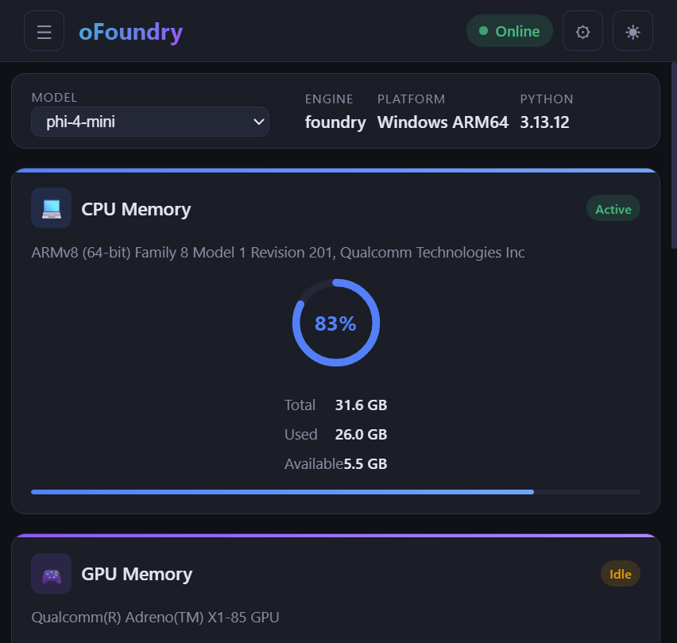
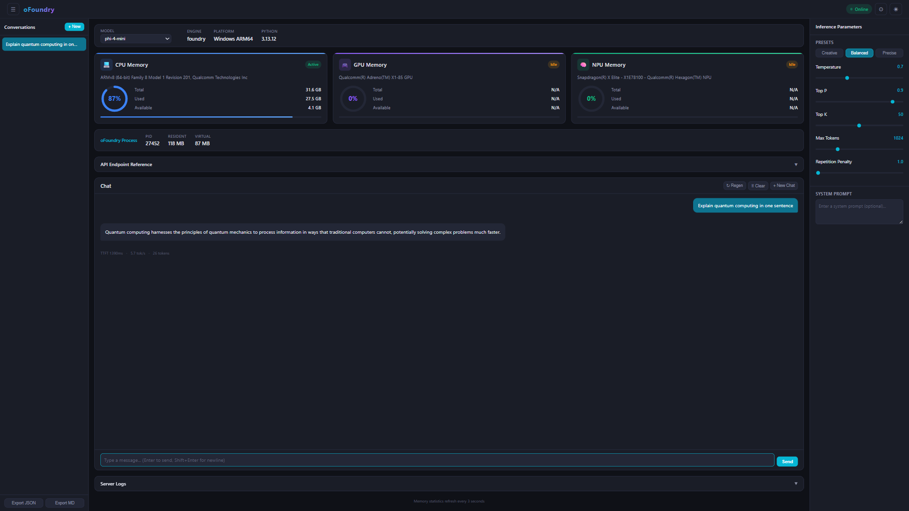
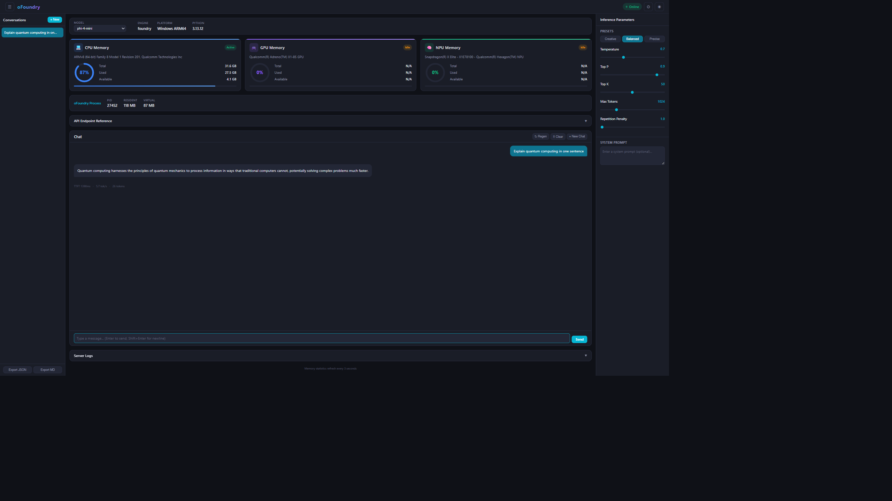

Benchmark & Performance性能基准
ofoundry provides built-in performance metrics and real-time resource monitoring so you can measure inference speed, memory usage, and system health — all from the CLI or the web dashboard.
CLI Timing StatsCLI 计时统计
Add the --timings flag to any ofoundry run command to display per-response performance metrics directly in the terminal:
# Foundry Local engine with timing stats
ofoundry run Phi-4-mini-instruct-generic-cpu:5 --timings
# ORT engine with timing stats
ofoundry run --engine ort ./models/phi3-mini-int4 --timings
# VL (Vision-Language) model with timing stats
ofoundry run ./models/Qwen3-VL-2B-Instruct_VL_ONNX_INT4_CPU --timingsAfter each response, the CLI prints a summary line:
TTFT 1398ms · 5.7 tok/s · 26 tokens
Web Dashboard MonitoringWeb 仪表盘监控
Launch the monitoring dashboard to browse and test models interactively:启动监控仪表盘，交互式浏览和测试模型：
# Foundry Local engine (default on macOS/Windows) — lists cached Foundry models
ofoundry dashboard
# ORT engine — scans ./models for local ONNX GenAI models
ofoundry dashboard -e ortThen open http://127.0.0.1:1573/ in your browser. Select a model from the dropdown and start chatting — the dashboard loads the model in-process and provides real-time system resource tracking alongside an integrated chat interface.然后在浏览器中打开 http://127.0.0.1:1573/。从下拉列表中选择模型即可开始对话——仪表盘会在进程内加载模型，并提供实时系统资源监控和集成聊天界面。

System Resource Gauges系统资源仪表
The dashboard tracks resource utilisation across all available compute hardware with real-time gauges that refresh every 3 seconds:
| Resource | Metrics Shown | Description |
|---|---|---|
| CPU Memory | Total, Used, Available, % gauge | System RAM utilisation with processor identification (e.g. ARMv8 Qualcomm, Apple M-series, Intel/AMD) |
| GPU Memory | Total, Used, Available, Active/Idle | Detected GPU device memory (NVIDIA, AMD, Intel, Qualcomm Adreno) |
| NPU Memory | Total, Used, Available, Active/Idle | Neural Processing Unit if available (Intel Meteor Lake, Qualcomm Hexagon) |
| Process Memory | PID, Resident, Virtual | Memory consumed by the ofoundry server process itself |

Inference Parameters推理参数
The dashboard sidebar provides real-time tuneable inference parameters with three presets:
| Parameter | Range | Description |
|---|---|---|
| Temperature | 0 – 2 | Controls randomness of output. Lower = more deterministic |
| Top P | 0 – 1 | Nucleus sampling probability threshold |
| Top K | 1 – 100 | Top-K sampling — limits token choices |
| Max Tokens | 1 – 4096 | Maximum number of tokens to generate |
| Repetition Penalty | 1.0 – 2.0 | Penalises repeated tokens |
Creative (high temperature, high top-k) · Balanced (default) · Precise (low temperature, greedy)
Chat Performance Metrics对话性能指标
The built-in chat interface shows real-time performance stats for every model response:

Each message displays three key metrics:
- TTFT (Time to First Token) — how quickly the model begins generating after receiving the prompt. Lower is better; strongly influenced by model size and available hardware acceleration.
- tok/s (Tokens per Second) — the sustained generation speed. Higher is better; CPU-only inference typically ranges 3-15 tok/s for small models.
- Token Count — total tokens generated in the response.
Full Dashboard Overview仪表盘完整概览
The complete dashboard brings together system monitoring, a chat interface, inference parameter controls, conversation history, server logs, and export functionality in a single view:

Dashboard Features Summary仪表盘功能摘要
| Feature | Description |
|---|---|
| Model Selector | Switch between cached models at runtime; NPU-accelerated models are marked with ⚡ |
| System Info Bar | Model name, engine type, platform, Python version, live health status |
| Memory Gauges | CPU / GPU / NPU utilisation with auto-refresh every 3 seconds |
| Inference Parameters | Temperature, Top P, Top K, Max Tokens, Repetition Penalty with presets |
| Chat Interface | Streaming responses with TTFT, tok/s, and token count per message |
| Conversation History | Saved conversations sidebar with system prompt configuration |
| Server Logs | Live request log with method, path, status code, and timing |
| Export | Export conversations as JSON or Markdown |
Performance Tips性能优化建议
- Choose smaller models for faster TTFT — run
foundry model listto see available models; models likePhi-4-mini-instruct-generic-cpu:5start generating in under a second on modern hardware. - Use Foundry Local on macOS/Windows — it automatically selects the best available accelerator (NPU > GPU > CPU).
- INT4 quantised ONNX models — provide the best balance of quality and speed for on-device inference.
- Close other memory-heavy applications — inference speed is directly affected by available RAM; monitor the CPU Memory gauge in the dashboard.
- Monitor the dashboard — run
ofoundry dashboard(Foundry Local) orofoundry dashboard -e ort(ONNX Runtime GenAI) and keephttp://127.0.0.1:1573/open while benchmarking to track resource utilisation in real time.